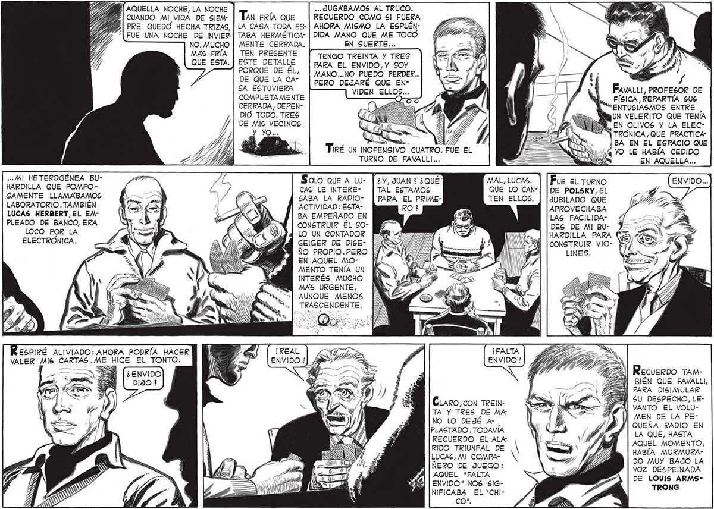

B| AQUELLA NOCHE, LA NOCHE ) ..« JUGABAMOS AL TRUCO. | CUANDO MI VIDA DE SiEM- | TAN FRÍA QUE RECUERDO COMO 5] FUERA PRE QUEDO HECHA TRIZAS, | LA CASA TODA ES-| AHORA MISMO LA ESPLÉNFUE UNA NOCHE DE INVIER-| TABA HERMÉTICA- | DIDA MANO QUE ME TOCO NO, MUCHO | MENTE CERRADA. EN SUERTE... MAS FRÍA | TEN PRESENTE Gu Esta, | este pera | ¿rENSO TREINTA Y TRES | | ad / Min ES , os. PORQUE DE EL, | MANO...NO PUEDO PERDER..] W_2> 7 /g | hi no. Y / DE QUE LA CA- "a SA ESTUVIERA PERO DEJARÉ QUE EN COMPLETA MENTE CERRADA, DEPENDIO TODO. TRES DE MIS VECINOS FAVALLI, PROFESOR DE FÍSICA , REPARTÍA 5US ENTUSIASMOS ENTRE | lhUN VELERITO QUE TENÍA LEN OLIVOS Y LA ELECY YO... o —= E MÍ TRÓNICA , QUE PRACTICA" Tee la, ( NUS. BA EN EL ESPACIO QUE IRÉ UN INOFENSIVO CUATRO. , | Nula YO LE HABÍA CEDIDO TURNO DE FAVALLI... Z DANS EN AQUELLA... SANOS «MI HETEROGÉNEA BUHARDILLA QUE POMPOSAMENTE LLAMABAMOS LABORATORIO. TAMBIÉN MAL, LUCAS. | | Pue EL TURNO QUE LO CAN-| |pe POLSKY, EL TEN ELLOS. | lduBiLADO QUE APROVECHABA Solo que A Lu- | ¿y, JUAN ? ¿QUÉ* CAS LE INTERE- | TAL ESTAMOS SABA LA RADIO- | PARA EL PRIMEACTIVIDAD: ESTALUCAS HERBERT, EL EMPLEADO DE BANCO, ERA LOCO POR LA ELECTRÓNICA. BA EMPEÑADO EN CONSTRUIR ÉL S0LO UN CONTADOR GEIGER DE DISEÑo PRoPIO.PERO |/N EN AQUEL MOMENTO TENÍA UN INTERÉS MUCHO MAS URGENTE, AUNQUE MENOS TRASCENDENTE. > « pr y - EN A e RES RO AN AS a N ¡REAL ENVIDO / Y CLARO,cON TREINTA Y TRES DE MA: NO LO DEJÉ APLASTADO . TODAVÍA RECUERDO EL ALA" RIDO TRIUNFAL DE LUCAS, MI COMPA- NX ÑERO DE JUEGO: AQUEL "FALTA ENVIDO" NOS SIGNIFICABA EL "CHIco", LAS FACILIDA" DES DE MI BUHARDILLA PARA CONSTRUIR VIORecuerpo TAM| BIÉN QUE FAVALLI, Sl PARA DISIMULAR BN SU DESPECHO, LEVANTO EL VOLUMEN DE LA PEQUEÑA RADIO EN LA QUE, HASTA AQUEL MOMENTO, HABÍA MURMURADO MUY BAJO LA VOZ DESPEINADA DE LOUIS ARMSTRONG
